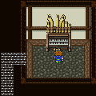
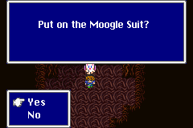

Story Line
(4)
โลกของ Galuf
Galuf's World
เมื่อมาถึงโลกของ Galuf จะมาตกบนเกาะแห่งหนึ่ง
(ติดเกาะเสียแล้ว ^^; )
ซึ่งเกาะนี้มีศัตรูตัวเดียวเท่านั้นคือ
และมันจะ Drop เฉพาะ Tent เท่านั้น (เก็บสะสมให้ได้ 99 อันได้เลย)
เมื่อสำรวจได้สักพัก Lenna จึงบอกให้กางเต็นท์เพื่อพักผ่อน
เมื่อกางเต็นท์พักผ่อน ในคืนนั้น Faris ได้ถาม Lenna ว่า
ทำไมตอนที่ต้องช่วย Hiryuu Lenna ถึงต้องยอมเสี่ยง เดินฝ่าหญ้าพิษ
Lenna จึงถาม Faris กลับว่า จำเรื่องเกี่ยวกับ "แม่" ได้หรือเปล่า
Faris ตอบว่าได้
แต่ Lenna ยังไม่ทันได้ตอบว่าทำไม กลับมีศัตรูเข้ามาจับตัว Lenna
และ Faris ไป
Butz จึงต้องต่อสู้เพียงลำพัง
Boss : Abductor
Level : 22
HP : 1,500
หาก Butz แพ้ จะถูกจับตัวไป
หาก Butz ชนะ จะได้รับรางวัลคือ หีบสมบัติ แต่ในหีบสมบัตินั้นมี...

Exdeath's Castle
ปรากฏว่า พวก Butz ถูกจับไปขังไว้ที่ปราสาทของ Exdeath
และถูกใช้เป็นข้อต่อรองให้ Galuf ที่นำทัพมาบุก ยกทัพกลับ
แต่ Galuf กลับบุกเดี่ยวไปปราสาทของ Exdeath
บุกเข้าไปช่วยเหลือพวก Butz
ด้านในสุดจะเจอกับ Gilgamesh เฝ้าอยู่หน้าห้องขัง
Boss : Gilgamesh

Level : 26
HP : 2,500
หากเปลี่ยนอาชีพของ Galuf เป็น Monk จะปราบได้อย่างง่ายดาย
จากนั้นช่วยเหลือพวก Butz ออกจากคุก และหนีออกจากปราสาท
* Note : บริเวณรอบๆ ปราสาท Exdeath จะมี Learning Magic ให้เก็บ
2 เวทย์ หากยังไม่ได้เก็บมา
Dark Shock (Black Shock) จาก
Rock Brain
Death Claw (Doom Claw) จาก
Rock Brain
* Note : วิธีเก็บ Death Claw จาก Rock Brain ต้องใช้คำสั่ง
Control ของ Mediator
Big Bridge
เมื่อหนีออกมาจากปราสาท ให้กลับไปข้ามสะพานด้านซ้าย
ระหว่างอยู่บนสะพานจะถูกโจมตีโดยศัตรูตลอดทาง
และจะเจอกับ Gilgamesh ดักซุ่มอยู่ด้วย
Boss : Gilgamesh
(ผ่านไปแป๊บเดียว Level เพิ่มมาตั้ง 2 Level แถม HP เพิ่มมาอีกตั้ง
2,500 แน่ะ ^^;)
Level : 28
HP : 5,000
เมื่อ Exdeath เห็นพวก Butz หนีไปได้ จึงสร้าง Barrier ออกมาป้องกันปราสาท
และ Barrier นั้นได้ผลักพวก Butz กระเด็นลอยหายไป...
Rugor (Lugor)
หลังจากที่ตกลงมา เดินมาทางทิศตะวันออกจะเจอหมู่บ้าน Rugor
หมู่บ้าน Rugor ไม่มีผู้คนผ่านมานานมากแล้ว
เด็กๆ ในหมู่บ้านบอกว่าเคยเห็นตัว Moogle แต่ไม่มีใครเชื่อ
และด้านทิศใต้ของหมู่บ้าน มีปราสาทเก่าแก่อยู่หลังหนึ่ง
ภายใน Pub ของหมู่บ้าน Rugor จะมี Piano06
ให้เล่นด้วย

* Note : ภายใน Pub จะมีทางลับซ่อนอยู่ ต้องใช้ความสามารถ
Passages ของอาชีพ Thief
* Note : อย่าลืมเล่น Piano ให้ครบทุกอันด้วย จะได้ Song
เป็นของตอบแทน
เมื่อไปเข้าพักในโรงแรม (INN) คืนแรกจะได้นอนฟรี
ในคืนนั้น Galuf นอนไม่หลับ จึงไปนั่งดื่มไวน์คนเดียวใน Pub
Butz ตื่นขึ้นมาในตอนดึก จึงตามไปคุยด้วย
Butz ขอโทษ Galuf ที่พวกตนตามมา และเป็นเหตุให้ Galuf ต้องถอยทัพ
แต่ Galuf กลับบอกว่า หากพวก Butz ไม่มา พวกตนคงโดน Barrier พัดหายไปหมดแน่ๆ
เมื่อตื่นมาตอนเช้า ให้มุ่งหน้าลงใต้ เป้าหมายคือ ปราสาท Kuzar ที่มีอาวุธในตำนาน
Sealed Castle Kuzar
ภายในจะเจอศัตรูสุดโหด
Shield
Dragon
Level : 29
HP : 19,999
Money : 1,000
Exp : 2,500
ABP : 5
* Note : วิธีปราบ Shield Dragon ให้ใช้คำสั่ง Control ของอาชีพ
Mediator
จากนั้นสั่งให้มันใช้ Flame กับตัวมันเอง ประมาณ 4-5 ครั้งก็ตาย
เมื่อเข้าไปถึงภายใน จะเจอห้องเก็บอาวุธในตำนาน
แต่พวกมันถูกปิดผนึกไว้ ไม่สามารถนำมาใช้ได้
อาวุธศักดิ์สิทธิ์ในตำนาน ทั้ง 12 ชิ้น มีดังนี้
|
ประเภท
|
ชื่อ
|
พลังโจมตี
|
รายละเอียด
|
| Sword |
Excalibur |
107
|
+5 Str,ติดสถานะ "ศักดิ์สิทธิ์"
(Holy) |
| Dagger |
Hardened (Sasuke) |
96
|
+1 Agi, สุ่มป้องกันการโจมตีทางกายภาพ |
| Dagger |
Assasin |
78
|
+1 Agi, สุ่มติดสถานะ "Doom"
ทำให้ศัตรูตายภายในครั้งเดียว |
| Spear |
Holy |
106
|
+3 Str, ติดสถานะ "ศักดิ์สิทธิ์"
(Holy) |
| Katana |
Masamune |
104
|
ได้โจมตีเป็นคนแรกทุกครั้ง ในฉากต่อสู้ |
| Bow |
Yoichi |
98
|
+3 Str, +3 Agi |
| Whip |
Firebute |
79
|
+2 Str, +2 Agi, ติดสถานะ "ไฟ",
สุ่มร่ายเวทย์ Fire 3 |
| Axe |
Rune |
68
|
+3 Magic Power, โจมตีรุนแรงเป็น 2 เท่าทุกครั้ง
(Critical Hit) โดยการใช้ MP |
| Staff |
Sage |
50
|
เพิ่มพลังโจมตีให้แก่เวทย์ "Holy",
โจมตีศัตรูประเภท "ผีดิบ" ได้รุนแรงเป็น 2 เท่า |
| Rod |
Magus (Wizard) |
37
|
เพิ่มพลังเวทย์ให้แก่เวทย์ดำ และเวทย์ขาว เพิ่มขึ้นอีก
50% |
| Bell |
Earth |
32
|
ติดสถานะ "ดิน" |
| Harp |
Apollo |
42
|
โจมตีศัตรูประเภท "มังกร" รุนแรงเป็น
2 เท่า |
Moogle Forest
เมื่อมุ่งหน้าลงใต้ไปตามทาง จะเจอป่าของ Moogle
ภายในจะเจอ Moogle ตัวหนึ่ง ซึ่งมันจะตกใจ วิ่งตกลงไปในหลุม
ให้พวก Butz ตามลงไปช่วยเหลือ
ภายในหลุมนั้น จะพบ Moogle ถูกศัตรูทำร้าย ให้เข้าไปช่วยเหลือ
Boss : Tyrasaurus
Level : 29
HP : 5,000
Weakness : Fire
เมื่อปราบได้ Lenna จะไปปลอบ Moogle ให้หายตกใจ
แล้ว Moogle จะบอกทางไปยังป่าของพวกเขา
ให้เดินไปตามทางที่ Moogle เดิน
อย่าเดินเข้าไปในทะเลทราย เพราะจะมีศัตรูสุดโหดรออยู่
Sand
Crawl
Level : 29
HP : 15,000
Weakness : Water
Moogle Village
ภายในจะเป็นหมู่บ้าน Moogle
จะมี Moogle ตัวหนึ่งให้หีบสมบัติแก่ Butz 6 หีบด้วยกัน (มีมีด Dancing
ด้วย)
และจะมี Moogle ตัวหนึ่งยืนเฝ้าหีบสมบัติ
ให้เข้าไปยังบ้านต้นไม้ใกล้ๆ จะมีชุด Moogle ให้สวมใส่

แล้วกลับไปคุยกับ Moogle ตัวนั้น มันจะเปิดหีบสมบัติให้

กลับไปคุยกับ Moogle ที่ให้หีบสมบัติ 6 หีบ
Moogle จะติดต่อกลับไปยัง Moogle ที่อยู่ที่ปราสาทของ Galuf
(Moogle สามารถติดต่อกันทางโทรจิตได้ Teleapthy)
จากนั้น Cara จึงนำ Hiryuu มารับพวก Butz กลับปราสาท
Castle Bal
เมื่อกลับถึงปราสาท ทหารก็มารายงานต่อ Galuf
พวกทหารไม่สามารถบุกเข้าไปยังปราสาทของ Exdeath ได้ เพราะ Barrier
นั่นทำให้ Butz ตกใจ เพราะไม่คิดว่า Galuf เป็นพระราชา
* Note : เก็บ Time Magic Exit บริเวณห้องพระราชา
กลับขึ้นไปด้านบนของปราสาท จะเจอ Cara และ Hiryuu
Cara บอกว่า Hiryuu กำลังจะตาย เพราะต้องบินไปรับพวก Butz ทั้งๆ
ที่บาดเจ็บ
และทางแก้ทางเดียวคือ "หญ้า Hiryuu" ซึ่งอยู่บนภูเขามังกรด้านทิศเหนือ
ชั้นใต้ดินของปราสาท จะมีทางลับอยู่ด้วย
ซึ่งมีศัตรูอาศัยอยู่
Statue
Level : 45
HP : 3,300
Weakness : Lightning
หากปราบได้ทั้ง 5 ตัวจะได้รับ
Money : 2,535
Exp : 125
ABP : 8
* Note : หากใช้ Sofe กับ Statue จะทำให้มันตายภายในครั้งเดียว
หรือใช้ Lerning Magic L5 Doom
จัดการในครั้งเดียว
หากใช้คำสั่ง "ขโมย" กับ Statue จะได้รับ Hi-Potion
แต่หากโชคดี จะได้รับ Rare Item คือ Double
Lance อาวุธของ Thife หรือ Ninja
ซึ่ง Double Lance สามารถโจมตีได้ 2 ครั้งต่อเนื่อง
จากนั้นค้นหาสิ่งของภายในปราสาท ดังนี้
Epee Sword
ลงไปในสระ แล้วเดินอ้อมทวนเข็มนาฬิกามายังด้านขวาของปราสาท กดสำรวจจะได้มา
Lamia Harp

เข้าไปทางลับใกล้ๆ กับร้านขายอาวุธและเครื่องป้องกัน
ภายในบริเวณที่มีชายแก่ยืนอยู่ จะมีสวิทต์ กดเข้าไปด้านใน เจ้าของร้านจะให้
Lamia Harp
เมื่อได้สิ่งของครบหมดแล้ว ให้ออกจากปราสาท แต่จะไม่สามารถกลับเข้ามาได้อีก
และเมื่อออกมานอกปราสาท ก็โดนศัตรูจู่โจมในทันที
Boss : Abductor

Level : 29
HP : 2,500
เป้าหมายต่อไปคือ ออกค้นหา "หญ้ามังกร"
Next
Story 5